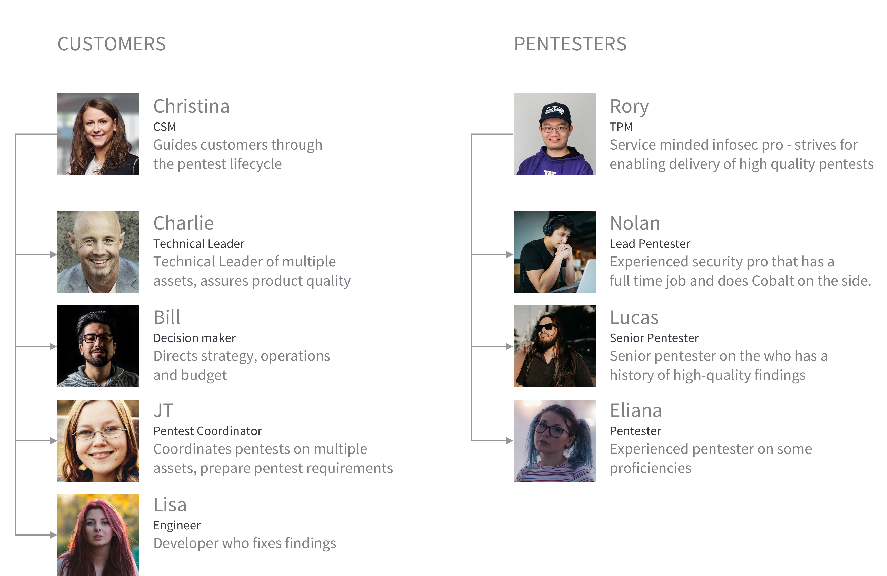

CONTACT ME
In case you are interested in hiring me or connecting with me, don't hesitate. All necessary information you can find below.
Together with the design team, we conducted 1:1 user interviews with internal users and pentesters. In regards to customers studies, we collaborated with sales and customer success teams by jumping on calls with customers or providing the list questions in order to capture users' data. All user interview data we stored in one single place in order to share it within an organisation.
This flow involves all user personas. By conducting user interviews and moderated user testing and contextual inquiries to capture inefficient user interactions, simplify or automatize it.
-V2@2x.png)
During user testing and observing interactions of different user groups I've noticed the following sequence of manual interactions: JT (pentest coordinator persona) fills in requirements in the following text field.

Christina (CSM persona) double checks these requirements with JT and copy the data to internal tool (admin application) to comments section.

Then Rory (TPM persona) checks requirements and copy it from comments to notes in posting to pentesters.

Nolan (Lead pentester persona) Checks postings list and applyes for a pentests based on notes in postings

The discovery about frictions between user personas helped to build an idea about clear communications between customers and pentesters excluding such third parties as CSM and TPM and helping them focusing more on communication with customers instead of repetitive actions. The solution was to handover this responcibility to customer with clear communication - this information is for pentester.

In case you are interested in hiring me or connecting with me, don't hesitate. All necessary information you can find below.
EMAIL: marys0506@gmail.com
SKYPE: mary_s_0506
PHONE: +4915736889500